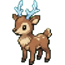

 Psychic
PsychicTap a stage to read its story.
A dainty fawn no taller than a garden gate, Fawnfrost has pale cream fur dusted silver and two small icy-blue antler buds that catch the light like frozen dewdrops. Its eyes hold a gentle glow - locals say it can sense a child's worry before a sound is spoken. It wanders the outer snowfields of Frozen Peaks at dusk, leaving faint frost prints that shimmer and disappear by morning. The guardians called it the Listening Fawn, for it would always pause and turn its ears toward any voice learning something new.
Field note: Its antler buds ring softly when a nearby creature feels calm - they go silent when danger approaches.
Light Grove. Fawnfrost and its family are found in the Light Grove. See everyone who lives there.
Share a Bond Food that matches its types to become friends. Fawnfrost loves:
A Bond Food is not a trick. It joins your spirit with the Kimuro's spirit, and only when it chooses you.
Print the Kimuro adventure packs: mazes, cards, a board game and Bond Mark medals.
See the printable packs